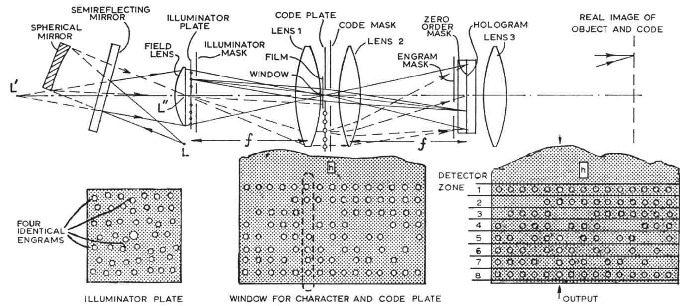

中文
中文D. Gabor
Editor’s Note
Dennis Gabor, the inventor of the theory of holography, here suggests an application of the technique, recently improved by the development of the laser, to a long-standing problem in engineering: the automatic recognition of characters, such as printed letters. Holography produces an image of an object based on information contained in a scattered coherent light wave. If one builds up a hologram progressively by scattering light from many possible variants of a single character, then illumination of a character similar to any such variant can be made to produce a visual code easily readable by a machine. Gabor’s basic idea, with many modifications, is now commonly used in pattern recognition techniques based on holography. 中文
WAVE-FRONT reconstruction or holography, on which the first report1 was published in Nature seventeen years ago, had a powerful renaissance in the past years. E. N. Leith and J. Upatnieks2, G. W. Stroke3 and others have greatly improved the original method, and showed that it was possible to reconstruct complicated two- and three-dimensional objects, with half-tones, in previously unattainable perfection. The revival of holography owed much of its impulse to the invention of the laser, which made it possible to produce holograms with interferences of the order of 10,000, and thus to make full use of the information capacity of fine-grain photographic plates. 中文
I wish to show that it has now become possible to harness holography for the solution of one of the most urgent problems of computers and other date-processing devices; the recognition of characters with many variants. 中文
Wave-front reconstruction contains a principle which has not yet been fully exploited. Expressed in a general form: two coherent waves are made to fall simultaneously on a photographic plate, one coming from an object A, the other from an object B. The photograph links these together in such a way that if the hologram is illuminated by A alone, B will appear too, and vice versa. So far this principle has been applied in the form that A was the object of interest and B a light source, usually a simple one, and in the reconstruction the hologram was illuminated by B. I now propose to turn this around. Let A be a character, such as a printed or hand-written letter or numeral, which can be read by human beings but not by a machine, and let B be a combination of point-sources, forming a code-word which can be read by a machine. Produce the hologram by combining A and B. When A, or a character sufficiently close to it is presented to the hologram, with the original illumination, the code-word B will flash out. This means that the hologram can act as a translator, or coding device. 中文
The interest of this principle is in the enormous recognition capacity which can be stored in a single hologram, and which one might not perhaps suspect at first sight. I wish to show that with N characters to be discriminated, each with M variants, the product M·N can be made of the order of a thousand or even more. 中文
Fig. 1 shows the optics for producing the master hologram, and for using it in the read-out. The recording medium is assumed to be a transparency, such as a microfilm; but reflecting media can also be used. The hologram is built up by repeated exposures in what may be called “layers”. These are not, of course, physically separated in the emulsion. Each layer corresponds to one of the N characters to be discriminated, with all its M variants, and is marked with one code-word. The layer contains the part-holograms, to be called “engrams” of the variants side by side, with little overlap. Each engram is produced with one direction of illumination, and as the photographic plate is arranged in the rear focal plane of a lens viewing the character, it is a “Fourier-hologram”. This has the advantage that the hologram is translation-invariant, that is to say, independent of the position of the character so long as this appears alone in the window. An engram need not occupy much more area in a photographic plate than would be needed for a good record of the corresponding character, but as a cautious example we will assume 120 engrams, each with a diameter of about 5 mm, on a photographic plate of 50 mm × 50mm. This is sufficient to record without overlap 30 variants, each in four or six “identical” engrams. Fig. 1 shows how this is achieved. 中文

Fig. 1. Apparatus for producing a coding hologram and using it for the read-out. 中文
The light of a laser issues from a point L, and a beam splitter consisting of a spherical mirror and a semi-reflecting mirror produces of this two images L′ and L″. The first of those serves the illuminator; the second, in the centre hole of the illuminator plate, serves the code plate. The illuminator plate, backed by a field lens, consists of a plastic plate embossed with, say, 120 lenticules, and is black outside the lenticules. These produce 120 point sources which illuminate the window containing the character through a lens 1, which removes the illuminator points into star space. The point sources correspond one-by-one to the engrams. There is a certain advantage in randomizing them slightly. Four identical engrams are taken at a time of any one variant. These are spaced out, as far as possible, to increase the resolving power of the hologram. They are selected with a mask, and a different mask with four holes is used for every variant. 中文
The point source L″ in the centre of the illuminator plate illuminates the code-plate, through the same lens 1, which serves in this area as a field lens. The code-plate, like the illuminator, is an embossed plastic plate, which contains the code-word in the form of groups of luminous points, arranged in one or several arrays. It is advantageous to use self-checking codes, in which every word has the same number of code-points. In the example there are six positions, of which two remain dark and four light up. This code has 6·5/1·2 = 15 words. Two more positions have been added. There do not contribute to the discrimination of characters, but improve the signal-to-noise ratio, as eight points have to light up for every valid character. 中文
In the making of the master hologram all engrams in one layer are marked, that is to say, exposed simultaneously, with one distinctive code-word, which is selected by a mask. But as each code-word illuminates the whole area of the hologram, a further mask must be used near the plane of the photographic plate, which cuts out the light except in the area of the engrams which are made at any one time. This makes it possible to observe the rule of optimum illumination, which postulates about equal light sums on any engram from the character and from its code-word. 中文
Black-on-white letters are less suitable for discrimination than their negatives, because they have too much in common; all their white area. But this disadvantage can be eliminated by a further mask, in the plane of the hologram, which cuts out all undiffracted light. By Babinet’s principle this turns a character into its negative. Such a mask can be easily made by exposing a photographic plate through a clear window simultaneously to all illuminator points. 中文
After M·N successive exposures of the photographic plate, which add up to a convenient medium density, the master hologram is made by processing and printing it, preferably with an overall gamma of 2, and the print is put back in the original position. In the reading all the point-sources of the illuminator are used, while the whole code-plate is covered up. A lens 3 is used for observation, which produces a real image of the code-plate. If now the recording medium is dragged across the window, whenever a character or a variant appears in it, its code-word will flash up. It is advantageous to arrange in the image plane a mask, which is a replica of the code-plate, with very fine holes, so as to exclude all but the signalling light. This mask, too, can be made photographically. 中文
A method of reading the code-words is to sum up all the light which appears in one zone, corresponding to one position in the code, and guide it to a separate photoelectric detector. Each detector is fitted with a level discriminator, so as to reject spurious signals below a certain level. This method is simple; but it has only moderate discriminating power, because if the characters are not clearly distinct, some light might show up in the same zone in the code-words of other characters. One can reduce this by making the code-words of characters which are not clearly distinct as different as possible. But the maximum of discrimination is achieved by a somewhat more complicated apparatus. In this the image of the code-plate is projected on the screen of an image camera. The code-words flash up at intervals corresponding to the time allotted to each letter, during 10-30 percent of this period. In the time between flashes all code positions are scanned word by word, and points above a certain level of intensity are transferred to a memory organ, such as a core store. But unless the full number of points appear in a word, the record is erased. If the full number is counted, the code-word is transferred to the computer. 中文
The great discriminating power of the holographic method stems from its high angular resolution. Assume, for example, N = 35, M = 30, M·N = 1050. The group of four engrams corresponding to the character presented to the reader receives 1/30 of the light, and can diffract about 1/35 of it, altogether about 10–3 of the total. (Not counting, of course, in black-on-white records, the undiffracted light which goes into the zero order.) Of the diffracted light, under the proper conditions, that is to say, when the engrams were taken with about equal light sums from the letter and from the code-word, one-quarter will go into the reconstruction of the code-word. One half appears in the object, another quarter goes into the “twin” image of the code-word, which, however, is washed out by intermodulation with the character, and is useless for recognition. But the useful quarter is concentrated in extremely small solid angles. For example, if four or six identical engrams are spaced out by about 25 mm, the solid angle in which the major part of the light corresponding to a code-point is concentrated will be of the order 10–8. Let the light of, say, 10–4 of the total be distributed among ten code-points, this means that 10–5 of the light appears in one code-point, in a solid angle which is perhaps 10–6 of the solid angle covered by the whole code; a concentration of the order ten. Moreover, this estimate is somewhat pessimistic, because it takes no account of the confirmation of the character by the engrams of slightly different variants in the same layer. 中文
In conclusion, there is good reason to believe that a single hologram may discriminate between all the numerals and the letters of the alphabet, each with 30 variants. 中文
(208, 422-423; 1965)
D. Gabor: Department of Electrical Engineering, Imperial College of Science and Technology, London.
References:
1. Gabor, D., Nature, 161, 777 (1948); Proc. Roy. Soc., A, 197, 475 (1949); Proc. Phys. Soc., B, 64, 244 (1951).
2. Leith, E. N., and Upatnieks, J., J. Opt. Soc. Amer., 53, 1377 (1963); 54, 1295 (1964); 55, 569 (1965).
3. Stroke, G. W., Optics of Coherent and Non-coherent Electromagnetic Radiations, Univ. Michigan (1965), with Falconer, D. G., Physics Letters, 13, 306 (1964); 15, 283 (1965).